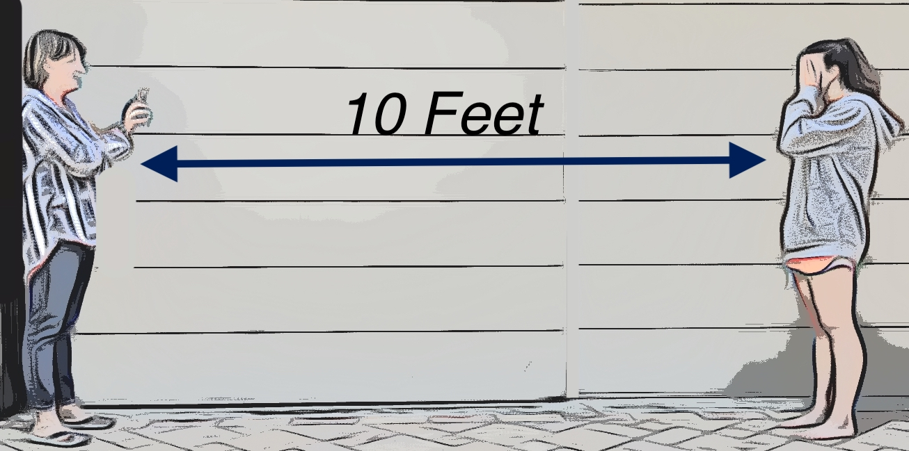

<div class="topleft">
<ion-menu-button></ion-menu-button>
</div>
<div class='bigimg'></div>
<div class="downletters">
    <label>This vision test will only use the letters H, O, T, and V, so write those letters down for the child to match. Stand 10 feet from the child. </label>

    <hr>
</div>
    <div class="buttono">
        <ion-button color="success" routerLink='babyInstructions2' size="large">continue</ion-button>
    </div>
